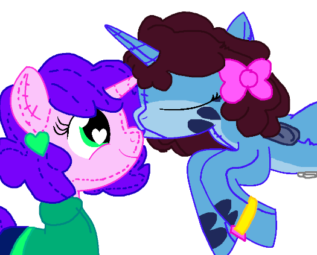
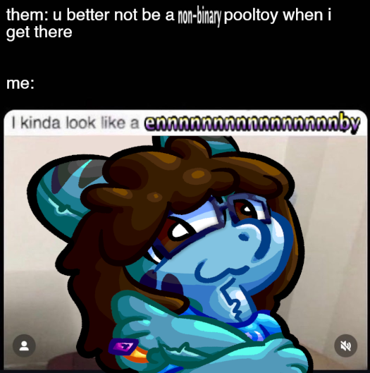

Oh God They're MitoisingPosted on 22/06/2026So... I mentioned in my first post how I am a pooltoy shark. Well did you know that I ALSO have other sonas/forms as well that I've never really shown? WELL NOW YOU DO. Now, if you've been following me for a while you might remember I used to be a Protogen at one point. Now... I am planning on bringing back that form of me at some point, but they will become a seperate sona like Mittens and be used for... something. You'll see them at some point soon.
On the topic of my pony form, and watching through MLP things with my toyfriend... wait. TOYfriend?? THAT'S RIGHT! I've been in a relationship for a few days now (as of writing) with a silly plushie pony... who you MAY know as ENDERCATCORE!!!!!!!!!!! I don't normally be very public about my relationships, but I think it'd be nice if I finally opened up about this stuff and put this here. Also we went on the Forbidden Path and KISSED.  This drawing was made by EnderCatCore using this base!I also updated the old navbar to more closely reflect the newer design or something oh FRICK I HAVEN'T WORKED ON IT AHHHHHHHHHHHHHHHHHHHHHHHHHHHHHHHHHHHH ok bye :3 |

The Gay MonthPosted on 04/06/2026Weeell weeell well... its the GAY month. DID YOU KNOW...  that I'm non-binary? WELL NOW YOU DO! If you've been paying close attention to my wording and some of my YouTube videos at the very end... I've been beginning to use a new name and they/them pronouns publicly. I now go by the name Tamasina, which is a name I've had decided on since 2024. I've also been doing voice training, so don't be suprised that my voice is different in newer videos. I'm still getting the hang of it. As of today, I don't want to be referred by my previous name at all anymore. That means any username I have featuring that name will change eventually. If you have any issues with that for some reason... what's wrong with you? I'm my own shark and I can do what I want. You have no control over how I choose to represent myself. If you can't accept me for who I am, then get the fuck off my site. You are not welcome here. |
||||
TEST POST PLEASE IGNORE 3: Oh God I Haven't Really Touched The New Navbar And Footer Please HelpPosted on 15/05/2026I'm back. Again. Part 3 of the redesign that's been cooking for a bit and... nothing really changed??? Oh well. Now it's time to talk about something about me instead of this stupid site. This is MY blog after all. That's right... you get to read about MY specific thoughts on things!!!!!!! MWAHAHAHHAHAHAHA!!!!!!!! Now, let's talk about HORSES... or more specifically a certain TV series named "My Little Pony: Friendship is Magic". I watched through the entire series with my partner (that also happened to be a pony). Wow. I sat there and watched all 222 episodes... including the movie and the 2 specials. What did I think about it? Oh I dont know... it's my favourite TV show of all time. Now I know a minority of you may be saying... "This Very Normal Pool Toy Shark Really Likes A Show That's Targeted Towards A Younger Age Demographic Than Themself. Okay." and to that I say... I DON'T CARE. I LIKE MY SILLY HORSE SHOW WITH THE FUNNY PINK HORSEY. I BOUGHT TWO PINKIE PIE PLUSHIES BECAUSE OF THIS SHOW AND I'M PROUD OF IT. OKAY??????? Overall... I require more horse show. Please. PLEASE. I NEED MORE. I NEED MORE. I'M DESPERATE. I'VE BEEN WATCHING SO MUCH FANMADE ANIMATIONS AND PLAYING FANGAMES. PLEASE. I REQUIRE MORE HORSEYS. PLEASE. At the time of writing, I haven't watched any other official horse stuff like Equestria Girls, G4.5 and G5 yet. I'll get to it soonish. Now that you've seen me ramble about horseys... you've earnt a prize for doing so! What is it? Oh I don't know, the first VIDEO made for this blog. That's right! You get to see 3 clips of me suffering in certain segments of Sonic Unleashed. How fun! Click on the image to OBSERVE the video. 
|
||||
TEST POST PLEASE IGNORE 2: Lunatea's VeilPosted on 04/05/2026Well, hello again. This is a test of the 2nd blog post. Woaw!!! For the record, I'm using the DD/MM/YYYY format for my dates in this blog. Okay. I haven't changed much on this site with part 2 of the redesign, but if you have the new navbar enabled you may have noticed that the items are slowly moving into place. Yay! In the future, I will add links to old blog posts instead of having them all in one page. I don't want this to get bloated in length like the reviews page... sorry for anyone on older browsers who try to visit that page! I'll update the reviews page to use the new seperate page format as well... after I do that to the blog page. |
||||
TEST POST PLEASE IGNOREPosted on 27/04/2026Pulled from the depths of unfinished website ideas, I've finally decided to make a blog for my website... and completely redesign almost everything on my site. At the time of writing, this redesign is still incomplete. I've decided to push the changes now since I've been putting off working on it. So, this is a transitionary period of some sort. The footer and navbar are still old and outdated, and sound will be broken for now as I'm getting ready to add the new things. Sorry! If you poke around in the source code you'll see the new stuff being hidden... and you can even enable the new footer if you're so inclined! Now, let's talk about this redesign, shall we?
With this update, I've removed the HTML4 version of the site as it's too annoying to maintain. If things are too broken for you on older browsers, sorry! Anyways, on this blog (that I probably won't update that much), I'll talk about random things that's on my mind, or some neat thing I've done with my 43903 consoles I own. Now, let's address the shark in the room. Which is me. I'm the shark.
So, from now on... I'm going to show up as that shark thing everywhere. Unfortunately for you, I'm not human. I'm not sure what else to write here so... have a real life photo of me, and also a photo of me in Klonoa 2. ")
")
Now, as your reward for reading this post in full (or you just scrolled to the bottom. Cheater.), you've unlocked an userstyle you can use on this site to show the WIP footer and navbar!
To use this userstyle, you'll need any kind of userstyle extension (such as Stylus), then create a new style and hit Import. Copy the text above and you're good to go! Make sure you disable/delete it when the redesign is actually complete though. It miiight break things in the future. That's all for now. Bye. |


{kind=link}
{kind=link}
{kind=link}
{kind=link}